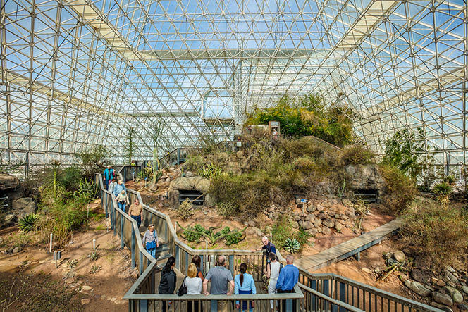
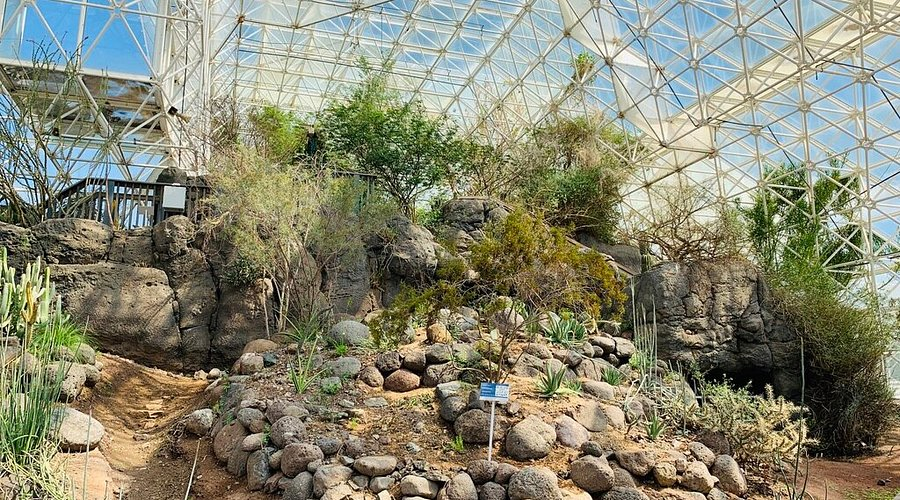

Coastal Fog Desert
An arid desert scrub ecosystem in a coastal climate — simulating erratic winter rainfall, summer drought, and the ecological dynamics of fog-dependent deserts.

A Coastal Desert Under Glass
Biosphere 2's desert biome was designed to simulate an arid desert scrub ecosystem in a coastal climate with erratic winter rainfall and summer drought. Excessive rain and relatively low evapotranspiration during the initial two-year closure resulted in a dense scrub invaded by grasses.
Conversion to a Mediterranean scrub woodland was initiated in 1994, but subsequently climate parameters were changed to simulate more arid conditions. Current management practices favor arid-adapted species and discourage grasses with C4 photosynthetic pathways.
Soil & Landscape Architecture
Soils were constructed to simulate those found in arid places — ranging from immature dune sand to profiles with clay, carbonate, and salt accumulations. Mini-rhizotron viewing tubes were installed in the dune to allow periodic observation of root growth and mesofauna.
Constructed Soil Profiles
From immature dune sand to mature profiles with clay, carbonate, and salt horizons — mirroring real aridland soil diversity.
Simulated Playa
A seasonally flooded playa basin where salt accumulates — though now almost completely overgrown by saltbushes (Atriplex cinerea).
Tinaja Feature
An artificial rock tinaja supports freshwater organisms adapted to periodic desiccation — a desert water pocket ecosystem.
Mini-Rhizotrons
Viewing tubes embedded in the dune allow non-destructive observation of root growth, mesofauna, and soil ecology over time.
Change & Management
Plant species diversity has declined since assembly, as might be expected. The substantial changes in management goals and climate, together with the loss of pollinating insects, have undoubtedly influenced extinction rates.
Current management practices are intended to favor arid-adapted species and discourage grasses with C4 photosynthetic pathways — restoring the biome toward its intended coastal fog desert identity.
The desert biome demonstrates how even engineered ecosystems develop their own ecological trajectories — sometimes resisting the intentions of their designers.
— Biosphere 2 Research TeamInside the Desert Biome

Desert Biome Research
The desert biome is available for studies of aridland ecology, soil processes, plant physiology, and climate adaptation. Contact the user facility program to discuss potential projects.